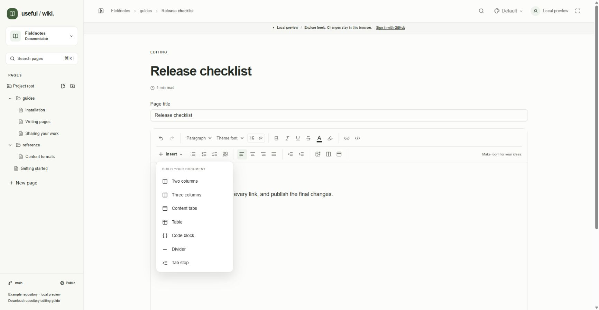
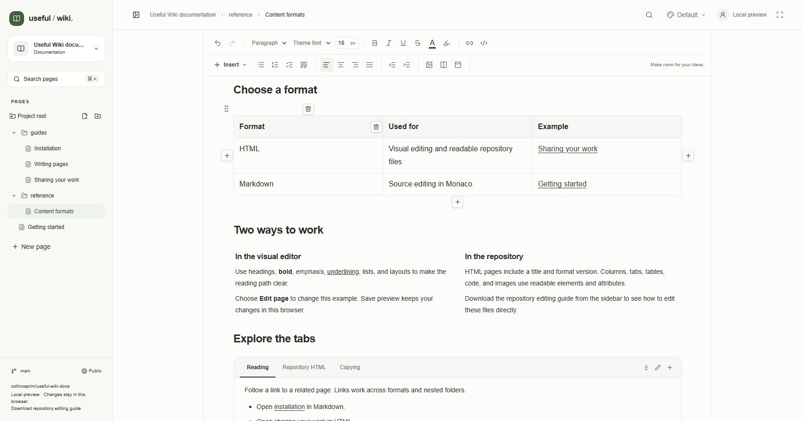
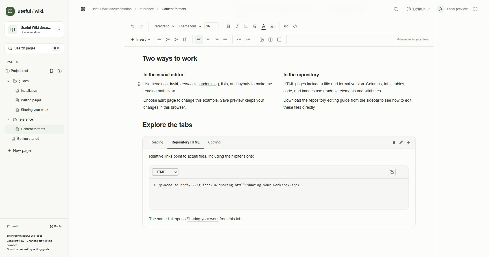
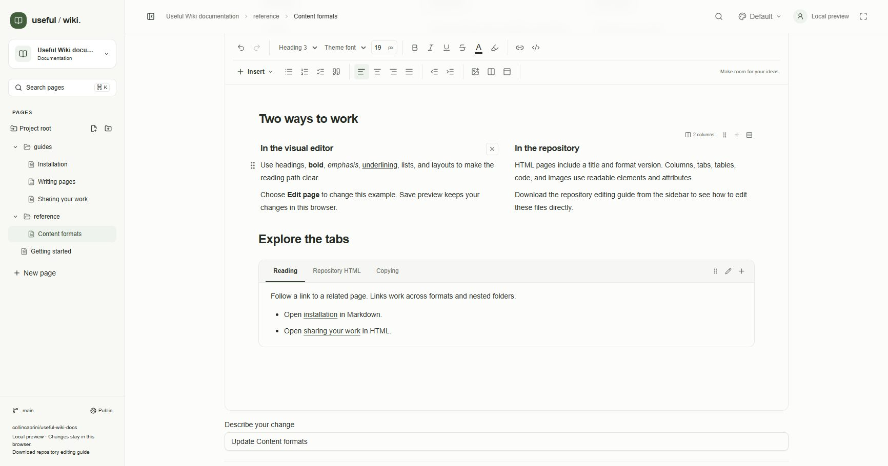
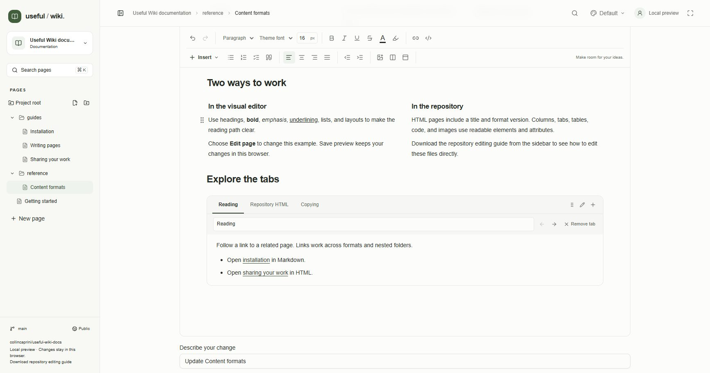

Open an HTML or older rich-text page and click Edit page. Select text to change existing content, or place the cursor where you want to write or insert a block. Hover over an icon to read its label. Save your changes using Writing and saving pages.
Control | How to use it |
|---|---|
Text style | Choose Paragraph or Heading 1 through Heading 6. Headings create document structure and feed the reading view's outline. |
Font family | Choose Theme font, Sans serif, Serif, or Monospace. Theme font follows the selected appearance. |
Font size | Enter 8–144 pixels, then press Enter or leave the field. An invalid value reverts to the current size. |
Bold, Italic, Underline, Strikethrough | Click to toggle a style. Bold, italic, and underline also use Ctrl/Cmd+B, Ctrl/Cmd+I, and Ctrl/Cmd+U. |
Text color | Open the color picker. After applying a color, use Use theme text color to remove that explicit color. |
Highlight | Toggle the preset pale-yellow background on selected text. Clicking again removes the highlight. |
Inline code | Mark a short filename, command, or identifier. Use a Code block for multiple lines. |
Add or edit link | Link selected text using the Link URL field. See Images and links for internal-link paths and removal. |
Use Undo (Ctrl+Z) and Redo (Ctrl+Shift+Z) at the left of the toolbar to reverse or repeat edits. On macOS use Cmd in these shortcuts. Undo history belongs to the current editor session; it is not a replacement for Git history.
Place the cursor in a paragraph or select several paragraphs.
Click Bullet list, Numbered list, Checklist, or Quote. Click an active control again to toggle it off. In a checklist, click an item's checkbox to change its checked state while editing.
Use Align left, Align center, Align right, or Justify on paragraphs and headings.
Use Increase indent and Decrease indent, or Ctrl/Cmd+] and Ctrl/Cmd+[, to change paragraph/heading indentation from 0 to 8 levels.
Tab has a context-specific meaning: in prose it inserts a literal tab stop displayed at a four-character width; in a list or checklist it nests the item; in a table it advances between cells; in a code block it indents by two spaces. Shift+Tab reverses indentation or moves backward between table cells. Insert → Tab stop explicitly inserts the prose tab-stop character. There is no custom tab-position ruler.
Place the cursor at the insertion point, open Insert, and choose Two columns, Three columns, Content tabs, Table, Code block, Divider, or Tab stop. The right side of the toolbar also has Insert image, Insert columns, and Insert content tabs shortcuts. Divider creates a horizontal rule between sections.

Local demo: the Insert menu groups the available document blocks and the prose tab stop.
Choose Insert → Table. The initial table has three columns and three rows, including a header row.
Click a cell and enter its content. Press Tab or Shift+Tab to move between cells. Drag a column boundary to adjust its width.
While the cursor is in the table, use its toolbar: Add row, Add column, Delete row, Delete column, or Remove table. Add actions insert after the selected row or column.
Alternatively, hover beside the table for Insert column on the left and Insert column on the right, or below it for Insert row below. Hover a header cell to reveal Delete hovered column; hover a row's first or last cell for Delete hovered row.
Hover actions target the hovered cell, independently of the current selection. Deletions are undoable. The toolbar provides the same core operations without depending on hovering. Imported merged-cell attributes are preserved, but the current toolbar has no merge/split commands.

Local demo: hover controls add table columns or rows and remove the hovered column or row.
Choose Insert → Code block.
Choose Code language: Plain text, JavaScript, TypeScript, JSON, HTML, CSS, Python, SQL, Shell, Markdown, YAML, Go, Rust, Java, C#, or C++.
Write in the embedded Monaco editor. Enter always makes a new line, even on an empty line. Tab indents by two spaces and Shift+Tab outdents. Highlighting helps you read the code; the block does not run it.
Click Copy code to copy the entire block with its whitespace. This also works in reading view. If clipboard access fails, select the code and use Ctrl/Cmd+C.
Press Ctrl/Cmd+Enter to move to a paragraph immediately after the block, including inside a column or tab. Escape focuses the copy button so you can leave the embedded editor with the keyboard.
Use the upper-right Delete code block × control to remove the block and its contents. It appears on hover or keyboard focus and remains available on touch screens. Undo restores it. Ctrl/Cmd+Z, Ctrl/Cmd+Shift+Z, and Ctrl/Cmd+Y inside code use the surrounding document's history. Ctrl/Cmd+S saves the page. A plain editor remains usable if Monaco or its highlighting cannot load.

Local demo: an embedded code editor retains the code's whitespace and provides a language selector and copy action.
Insert two or three columns. Click inside each column and add normal text, images, tables, or other supported blocks.
Use Add column in the column group's controls to reach a maximum of four columns. Adding a column resets widths to an equal split.
Drag a vertical separator to resize adjacent columns. You can also focus Resize column 1 or another separator and press Left/Right to change the split in two-percentage-point steps. Each adjacent column retains at least 12% width. Double-click a separator to restore equal widths.
Use Drag columns to move the group. Use Convert columns to normal blocks to keep all the content in column order and remove the column layout.
Delete column removes that column and its contents in one undoable action. If you remove one of two columns, the remaining content becomes ordinary blocks. Columns share the page background with minimal internal spacing and stack vertically on narrow screens.

Local-preview example: columns have minimal padding and no separate background or border. The controls above the group move it, add a column, or convert it to ordinary blocks. The × inside a column removes that column and its contents.
Choose Insert → Content tabs. A new group starts with Overview and Details.
Select a tab and edit its panel. Use Add tab to add panels, up to eight total.
Click Rename active tab. Edit Tab name, up to 40 characters. The same settings row contains Move tab left, Move tab right, and Remove active tab.
Use Drag tab group to move the whole group. When a tab button has focus, Left/Right cycles through panels and Home/End selects the first/last panel.
A group must retain one tab. Removing a tab removes its contents and can be undone. Which tab is currently open is display state; saving includes every panel. Readers can switch tabs without changing page content. Plain HTML and Markdown exports include all panels.

Local demo: Rename active tab opens the tab name, reorder, and remove controls beneath the tab bar.
Hover beside an ordinary block to reveal Drag block. Drag it above or below another block to reorder content, or into another column. Drag near the left or right edge of an ordinary block until the side indicator appears, then drop to create a two-column group. Side drops work in the main document, a column, and a tab panel; an existing column group is not a side-drop target. Moving a block this way is undoable as one operation.
Outside embedded code, Ctrl/Cmd+Enter adds a paragraph at the end of the document, useful when you are inside a nested layout. Escape releases rich-editor focus.
The current visual editor has no slash-command menu, comments, simultaneous editing, or rich-text find/replace. Touch drag sensors and full Word/Google Docs paste fidelity are not implemented. Pasted HTML is normalized to the supported document structure, so review complex pasted content before saving. Markdown source editing has its own find/replace controls; see Markdown and portable files.